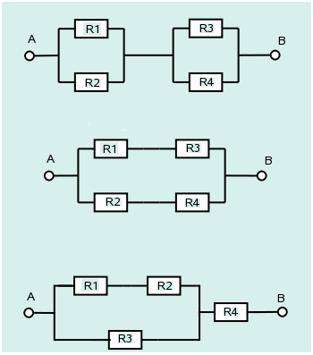

Taller 211
Módulo 2
dgonzalez

Probabilidad y mi vida
Las decisiones forman parte de nuestras vidas, dia a dia tomamos decisiones que afectan nuestro futuro, para tomarlas en algunas ocasiones recurrimos a valorar el riesgo que podrían tener. ¿ En tu vida has tomado decisiones con información previa que te ha permitido valorar su riesgo?. o por el contrario tus decisiones han obedecido a corazonadas y sentimientos?. Esta pregunta solo es para reflexionar sobre el tema . No debes contestarla si no lo deseas.

Lanzamiento de un dado
Un experimento consiste en lanzar un dado y observar el número de puntos en su cara superior. Algunos eventos aleatorios que se pueden definir a partir de este experimento pueden ser:
- A: sacar 2
- B: sacar un número par
- C: sacar un número mayor a 2
- D: obtener A y B
- E: obtener A o B o ambos
- F: obtener A y C
- Describa el espacio muestral asociado al experimento aleatorio
- Liste cada uno de los eventos aleatorios A hasta F
- Represéntelos mediante un diagrama de Ven
- Determine en cada caso las probabilidades asociadas a cada evento aleatorio

Faltar a clases
En un grupo de 100 estudiantes 30 residen por fuera de la ciudad, de los cuales 10 presentan altos niveles de inasistencia a clases, mientras que 35 de los que residen dentro en la ciudad también presentan altos niveles de inasistencia a clases.
- Construya una tabla de probabilidades con la información anterior.
- Represente también la información mediante un diagrama de Venn.
- Identifique dos eventos simples y dos eventos conjuntos En cada caso escriba en palabras la probabilidad y su resultado
- ¿Se podría afirmar que residir en la ciudad y no tener altos niveles de inasistencia a clases son eventos independientes?

Sobre costos en la construcción
Una empresa de construcción local descubrió a través de una investigación que solo el 20% de todos los trabajos son terminados a tiempo, mientras que el 30% sufrían sobrecostos. Además, los sobrecostos se presentan en el 75% de las veces en la que los trabajos se terminaron a tiempo. Carlos, gerente de la empresa desea conocer que tan probable es que un proyecto no tenga sobrecostos y se termine a tiempo. Esto le permitirá tomar decisiones en caso de ser necesario. Ayude a Carlos a resolver su interrogante.

Muertes por accidentes de transito
Se sabe que los accidentes de tránsito en su mayoria ocurren durante la noche de los sábados y se deben en un 65% la ingesta excesiva de alcohol, un 25% se deben a la imprudencia del conductor y el resto a otras causas, (fallo mecánico…etc.). En estos accidentes, el resultado es nefasto en el 30% de las veces para el primer caso, un 20% en el segundo y el 5% en el tercero. Una empresa de salud que presta servicios de ambulancias quiere que Usted le ayude a pronosticar cuál es la causa del accidente más probable, sabiendo que este hecho ha tenido resultados nefastos. Con esta información la empresa pretende tomar decisiones sobre el equipamiento que deben tener sus vehículos, dando prioridad a los elementos relacionados con mayor probabilidad de ocurrencia. Ayude a la compañía de salud a establecer el orden de estas prioridades.

Sistema de seguridad:
Uno de los sistemas de seguridad de la universidad funciona mediante
la conexión de cuatro componentes como se muestra en las figuras.
Suponga que estos componentes funcionan de manera independientes y que
la probabilidad de que falle cada uno de los componentes
R1, R2, R3y R4 son
respectivamente: \(0.10\), \(0.05\), \(0.10\) y \(0.20\). Con el fin de tener la mejor
composición de ellos, es decir la mayor confiabilidad de funcionamiento,
el director de recursos físicos le pide a determine cuál es la mejor
configuración del sistema.

Delincuentes adictos a las drogas :
Un estudio sobre la conducta de un gran numero de delincuentes adictos a las drogas hace pensar que la probabilidad de una condena de dos años después del tratamiento podría depender del nivel de educación del delincuente. Las proporciones del numero total de casos que caen en cuatro categorías de educación y condena se muestran en la tabla siguiente:
| Educación | Condiciones dos años después del tratamiento |
|---|
| Condenado | No condenado | Totales | |
|---|---|---|---|
| 10 años o más | 0.10 | 0.30 | 0.40 |
| 9 años o menos | 0.27 | 0.33 | 0.60 |
| Totales | 0.37 | 0.63 | 1.00 |
Suponga que se selecciona un delincuente del programa de tratamiento y se esta interesado en los siguientes eventos :
\(A\): El delincuente tiene 10 años de educación o más
\(B\): El delincuente es condenado dos años después de completar el tratamiento
Encuentre las probabilidades para los eventos:
- \(A\)
- \(B\)
- \(A \cap B\)
- \(A \cup B\)
- \(A'\)
- \((A \cap B)'\)
- \((A \cup B)'\)
Una compañia de seguros de automóviles trabaja con cuatro tipo de autos : Rayquaza, Etenatus, Mewtwo y Groudon, sobre los que cuenta con la información que se muestra en la siguiente tabla.
Construya un diagrama de árbol que represente la información suministrada y a partir de los resultados obtenidos ayude al gerente de la compaía quien esta interesado en conocer cual marca tiene mayor probabilidad de accidente si se conoce que ha tenido un accidente. Esto le ayudará a realizar ajustes en los precios de las polizas.
Un dispositivo sirve para identificar una cierta enfermedad. Si alguien está enfer mo, hay un 90 % de posibilidades de que la prueba sea positiva. Si no está enfermo hay todavía un 1 % de posibilidades de que la prueba sea positiva. Aproximada- mente el 1 % de la población está enferma. Smith pasa la prueba y resulta positiva. La probabilidad de que tenga la enfermedad es? (Carmen Diaz-2005)

En una ciudad hay 60 hombres y 40 mujeres por cada 100 habitantes. La mitad de los hombres y una tercera parte de las mujeres fuman. Si se selecciona al azar un fumador, ¿qué es más probable, que sea hombre o mujer? (Carmen Diaz-2005)

En un grupo de 1000 sujetos se encontraron 500 sujetos aptos de los que 300 tenían inteligencia superior. De los 400 con inteligencia superior 300 resultaron aptos. ¿Son los sucesos A: “ser superior a la media en inteligencia” y B “ser apto en rendimiento” independientes? (Botella, León y San Martín, 1993, p. 283)